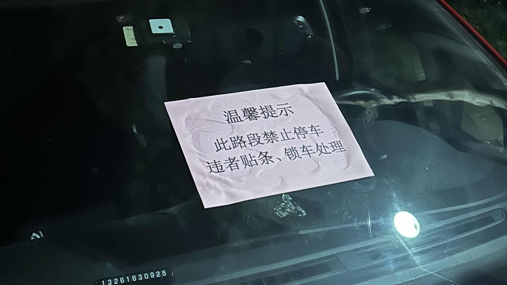

معضلة مواقف السيارات | أصلي، ترجم بواسطة AI
لدي سيارتان في مجتمع شقة والديّ، لكن لدينا فقط مكان وقوف واحد داخل المبنى. لا نريد استئجار مكان وقوف آخر، لذا يجب أن أوقف سيارتي الثانية في المنطقة العامة. في المنطقة العامة، هناك أماكن وقوف قانونية، لكنها ليست كافية. غالبًا ما يكون هناك عشرون أو ثلاثون سيارة متوقفة على الطريق. يقوم الحارس بلصق ورقة حمراء على الزجاج الأمامي للسيارات لتحذيرهم.
رسوم وقوف السيارات حوالي 12 يوان صيني في اليوم، أو 0.5 يوان صيني في الساعة. سيارتي الأولى مجانية لأنها مخصصة لموقف السيارات الخاص بنا.
لقد أوقفت سيارتي الثانية في مكان وقوف قانوني. ومع ذلك، ليس من الملائم استخدام السيارة، حتى في ساعات متأخرة من الليل. غالبًا ما يأخذ أحدهم المكان في وقت متأخر من الليل، مما يجعل الأمر مزعجًا للغاية.
حدث هذا مؤخرًا: استخدمت السيارة في الساعة الرابعة صباحًا للخروج والاستمتاع بسيخين من لحم الضأن. عدت بعد ساعة، حوالي الساعة الخامسة صباحًا، وكان المكان قد احتلّه شخص آخر. أحد الحلول كان قيادة السيارة داخل المبنى وإيقافها أمام سيارتي الأولى. وبما أنه كان يوم السبت، لن تحتاج زوجتي لقيادة السيارة الأولى إلى شركتها.
ومع ذلك، في وقت الظهيرة، بينما كنت نائمًا، استيقظت على مكالمة. أخبرني أحدهم أن أنقل السيارة. على الرغم من أنني ركنت بعناية وكان من المفترض أن تتمكن السيارات القريبة من المغادرة، إلا أن أصحابها كانوا غاضبين من الوضع.
الليلة، فكرت في كيفية تجنب مثل هذه الأخطاء والتعامل معها بشكل صحيح. يجب أن أحاول مرة أخرى لمعرفة ما إذا كان شخص ما سيشغل مكاني، حتى في وقت متأخر من الليل. أحتاج إلى معرفة احتمالية حدوث ذلك حتى أعرف ما إذا كان بإمكاني تحمل تكرار هذا الخطأ. ثم فكرت، لماذا لا أوقف سيارتي في المنطقة العامة غير القانونية؟ على الرغم من أنني أكره تنظيف الورقة الحمراء من الزجاج الأمامي لسيارتي، إلا أنها قد تكون تستحق العناء. الورقة الممزقة العالقة على الزجاج يمكن إزالتها، لكنها مزعجة.
 المصدر: تم التقاطها ذاتيًا
بهذه الطريقة، يمكنني استخدام سيارتي في أي وقت. لذا، تركيزي الحالي هو على كيفية تنظيف الورق بشكل فعال. يبدو أنني بحاجة إلى استخدام الكحول لإذابته. أنا سعيد لأنني توصلت إلى حل كهذا.
سابقًا، ولتجنب مشكلة احتلال مكان وقوف السيارات الخاص بنا، كنا نادرًا ما نستخدم سيارتنا الثانية لمدة شهرين تقريبًا.
إذًا، يبدو أن هذه الطريقة مقبولة، ونحن نبحث عن طريقة لتنظيف الورق الأحمر من النافذة الأمامية بشكل فعال.
هناك عدة دروس هنا: الأخطاء ليست شيئًا يجب الخوف منه طالما أنها في متناول اليد. حاول التفكير بأفضل الطرق دون حدود.
القواعد تكون أحيانًا سيئة، وعلينا أن نقاومها. أعتقد أن مجمعنا السكني يمكنه السماح بوقوف 50 سيارة إضافية في المنطقة العامة. كل سيارة داخل المجمع السكني قد دفعت بالفعل رسوم الوقوف. يستخدم الحارس ورقة حمراء لتهديد الناس، لذلك لا يجرؤ سوى حوالي عشرين سيارة على تحدي القاعدة والوقوف في المنطقة العامة. قررت أن أنضم إليهم.
التحديث:
مثير للاهتمام. تلقيت ورقة حمراء على الزجاج الأمامي لسيارتي. اشتريت مزيل اللاصق متعدد الوظائف أدناه، لكنه لا يعمل بشكل جيد في هذه الحالة. السائل يتدفق بسرعة إلى أسفل الزجاج الأمامي المائل.
في المرة القادمة، استخدمت الماء الساخن في المنزل لإزالته، وقد نجح ذلك بشكل جيد. ومع ذلك، سيضع الحارس ورقة حمراء أخرى عليها. ربما يجب أن أصنع ورقة حمراء لألصقها في الزاوية العلوية اليسرى من النافذة الأمامية لخداع الحارس وجعله يعتقد أنه قام بالفعل بذلك، وأتمنى أن يرحمني.
 المصدر: JD.com
المصدر: JD.com